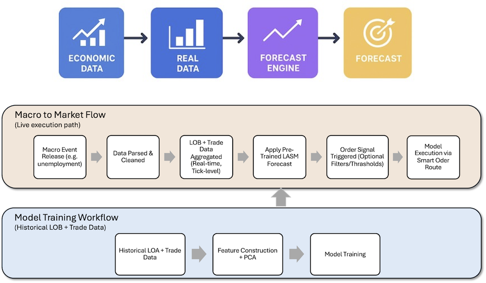

For each symbol: top horizon by best 3-month average win rate, and best win rate on the most recent date.
| OS | IS | |||||
|---|---|---|---|---|---|---|
| Symbol | Top (Best 3-day Avg) | Most Recent Best | Date | Top (Best 3-day Avg) | Most Recent Best | Date |
Real-time LOB dynamics, predictive modeling, and execution edge — all in one portal
Explore DataEach trading day includes millions of tick-level records from CME futures, e.g., Treasury and E-min Index limit order books (LOB) capturing the market’s microstructure at millisecond granularity across both top-of-book and deeper liquidity levels.
To mitigate overfitting and reduce noise, the data is downsampled—preserving key dynamics while filtering out excess volatility. A representative subset is then sampled to balance model fidelity with computational efficiency, producing a high-quality dataset optimized for training short-term market behavior.
We leverage a curated blend of raw and engineered features derived from high-frequency Treasury futures data. These features capture the real-time behavior of the limit order book (LOB), including price levels, liquidity depth, and trade flow signals. Additional derived metrics—such as microprice, order imbalance, and realized volatility—enhance the signal quality and reflect nuanced market dynamics.
To streamline modeling and reduce overfitting risk, we apply dimensionality reduction techniques (e.g., PCA), transforming the full feature space into a compact set of informative components. This process ensures robust, efficient learning while preserving key aspects of market microstructure.
Our forecasting engine leverages a deep LSTM architecture with dropout regularization, trained on high-frequency market data. It supports classification to detect directional movement (up, flat, down) using configurable price thresholds, and regression to predict mid-price deltas in basis points.
Temporal sequences span hundreds of market events to capture evolving order flow and liquidity dynamics. Prediction horizons are optimized to forecast meaningful moves ahead of market response. Training labels and signal sensitivity are aligned with strategy-specific goals—such as reactions to macro events, filtered time windows, or trading session regimes.
This Strategy-Aligned Customization ensures the model tailors its lookback windows, forecast horizons, and thresholds to match the decision cadence and risk appetite of specific trading styles.
Hyperparameters—including network size, memory depth, dropout, and learning rate—are tuned using Bayesian optimization for optimal performance under noisy real-world conditions.
The chart below illustrates how our real-time and offline components interact to generate fast, informed trading signals based on macroeconomic events and high-frequency market data.

Interested in deeper performance metrics and microstructure analytics?
You can:
• Email us at info@quantumyield.ai
• Or book a meeting directly via Calendly